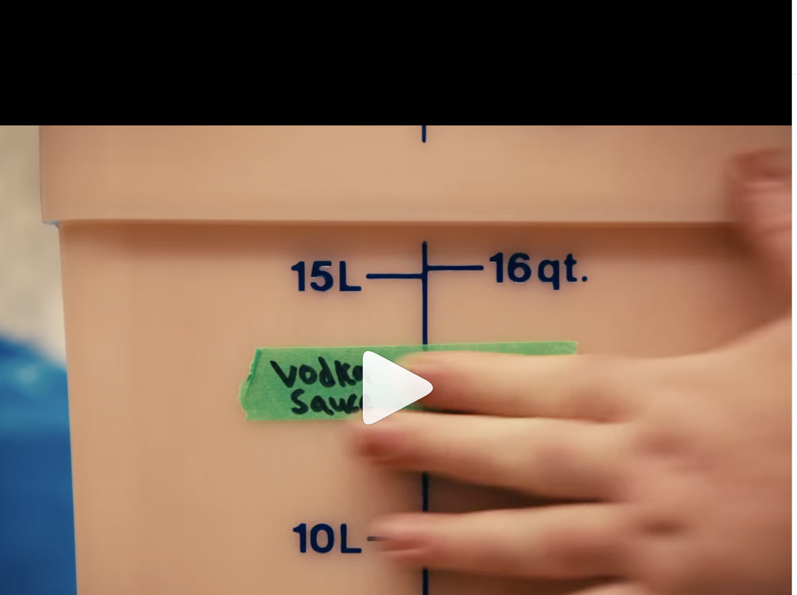
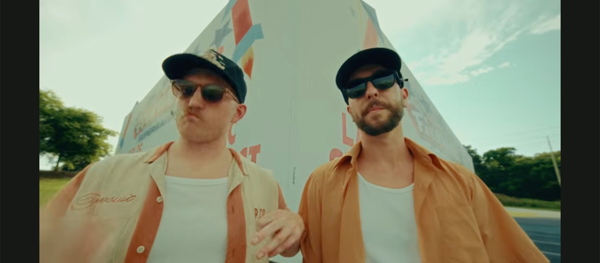
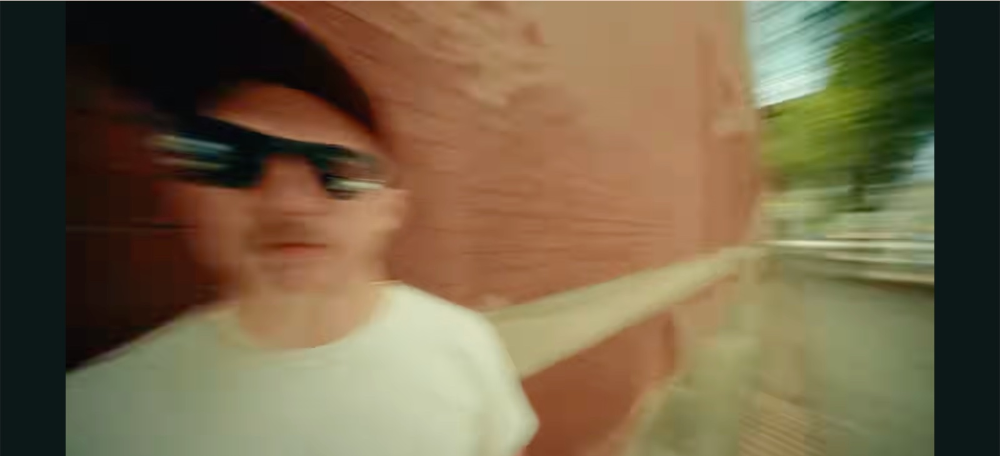
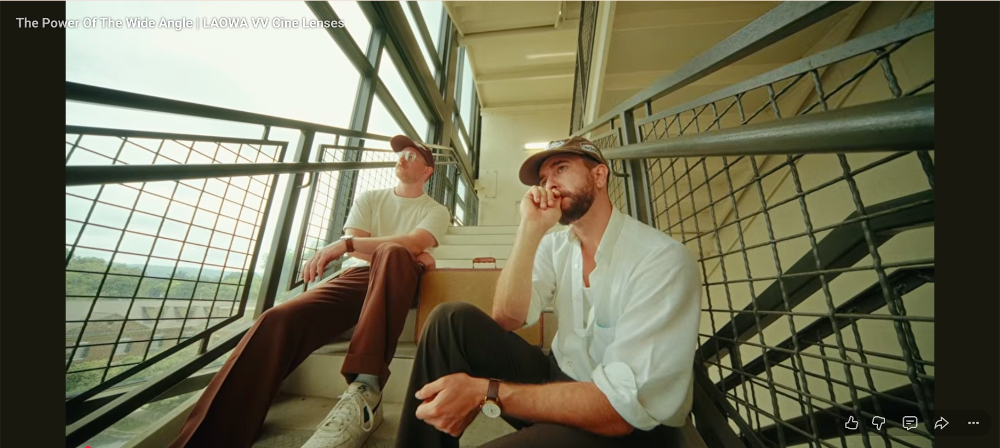
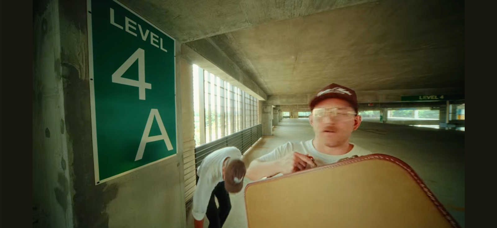

Differents projets vidéos formats courts



Double-cliquer pour décrire le plan


Ouverture sur une assiette, retrait de l’assiette, flash blanc et nom Tandem apparaît, tandem reste avec des plans multiples des lieux assez rapide
Quelques plans nourriture et close up de préparation des plats, attention beaucoup de overhead shots à planifier à l'avance
Sur les plans, il faut toujours de l’action, surtout sur ceux filmés depuis le dessus

1,201 likes, 14 comments - jakobtr le November 1, 2026: "Your restaurant doesn’t need more content, I deserves higher quality content. 📸 Food content is not always about glossy images and perfectly plated dishes. It’s the feeling which surrounds the dish when you eat it. ✨ . . . #hospitalitycontent #restaurantcontent #viennaphotographer".

6,147 likes, 37 comments - shop.arties le September 27, 2026: "Good food starts with good ingredients… and good people.".

5,069 likes, 41 comments - heartmedia le October 7, 2026: "age is just a number".







Plan 1 : La porte (0-3 s)
L’image : la grande porte du hangar s’ouvre, les deux chefs apparaissent en silhouette dans la lumière du dehors et entrent.
Placement : à l’intérieur, face à la porte, posée au sol. L’objectif est à 5-10 cm du béton, à environ 1,5 m de la porte.
Angle : contre-plongée d’environ 25-30°. La porte remplit le cadre, la charpente apparaît en haut.
Cadrage : la fente de la porte bien au centre.
L’action : les chefs ouvrent chacun un battant en même temps (ou un seul si c’est une porte coulissante), font 2 pas, et s’arrêtent à environ 80 cm de la caméra, en regardant vers le haut du hangar.
La lumière : le contre-jour naturel dehors. Expose pour le ciel, les chefs seront en semi-silhouette. Si tu veux voir un peu leurs visages, place la 60 W à l’intérieur, réfléchie sur un mur, à faible puissance.
Le mouvement : plan fixe, Pan up a la fin. (zoom in postprod)
Matos : une plaque basse ou un sac sable (bean bag) pour poser la caméra au sol, un sac de sable
Piège : caméra est bien d’aplomb. Au 12 mm, la porte va pencher sinon.
Plan 2 : Le whip pan vers la charpente (3-5 s)
L’image : un mouvement très rapide vers le haut, qui s’arrête net sur la charpente, parfaitement symétrique.
Placement : au centre du hangar, juste sous le faîte (le point le plus haut de la toiture).
Angle : la caméra commence à hauteur des yeux, puis bascule d’un coup vers le plafond, à 90°, droit vers le haut.
Cadrage : à l’arrivée, le faîte doit être bien au milieu du cadre. C’est ce qui donne la symétrie avec la charpente en étoile.
Le mouvement : une bascule rapide et franche, puis un arrêt net de 2 secondes. +ieurs essais pour que l’arrêt soit pile au centre.
Réglages : obturateur à 1/50 pour avoir le flou du mouvement.
Au montage : cut la fin du plan 1 juste au moment où le mouvement commence, puis enchaîne sur la fin du plan 2. L’œil croit que c’est un seul mouvement.
Matos : à la main avec la stabilisation interne du boîtier, ou au gimbal.
La lumière : la lumière du jour des verrières, idéalement pas en plein soleil direct.
Plan 3 : La caisse vers l’objectif (5-8 s)
L’image : une caisse en bois remplie de gibier et d’ingrédients atterrit juste devant l’objectif. Au-dessus, le chef penché, en plongée.
Placement : en hauteur.
Angle : plongée forte de 45 degrés
Distance : la caisse se pose au sol. Le chef est à environ 1 m.
Cadrage : la caisse occupe le bas du cadre (le premier tiers).
L’action : le chef entre dans le champ par le haut avec la caisse, la pose fermement (sans la lancer), puis lève les yeux vers la caméra pendant une seconde.
La caisse : une vieille caisse en bois avec des plumes de faisan qui dépassent, des champignons, du genévrier, des herbes, un morceau de gibier visible.
La lumière : la lumière du jour du dessus pour le chef, et la 60 W de côté, rasante, sur la caisse pour faire ressortir les textures.
Mise au point : réglée à environ 30 cm, avec f/5.6 pour que la caisse et le chef soient nets.
Matos : une plaque basse ou un bean bag, et le filtre protecteur sur la lentille.
Piège : marque au sol, avec du scotch, l’endroit exact où poser la caisse, pour que ce soit toujours au même endroit.
Plan 4 : La vue depuis le plan de travail (8-11 s)
L’image : la caméra est posée sur le plan de travail en inox, au milieu des ingrédients. Au-dessus, le chef coupe, concentré, avec la charpente derrière sa tête.
Placement : couchée sur le plan de travail, à côté de la planche à découper.
Angle : contre-plongée forte, de 60-70°, presque vers le haut.
Distance : le visage du chef est à 40-60 cm de l’objectif. Le couteau et les mains sont à 25-30 cm.
Cadrage : au premier plan, des herbes ou un champignon sur les bords, légèrement flous. Au centre, les mains et le couteau. En haut, le visage et la charpente.
L’action : le chef découpe, avec des gestes lents et précis. Il ne regarde jamais la caméra, il est concentré.
La lumière : la 60 W avec une boîte à lumière douce, de côté, sur le visage. La lumière des verrières en contre-jour derrière lui.
Matos :
une petite plaque ou un bean bag pour caler la caméra inclinée ;
l’écran orientable pour cadrer, ou l’app Lumix Lab sur téléphone pour voir l’image à distance ;
le filtre protecteur sur la lentille ;
un sac plastique transparent autour du boîtier contre les projections.
Sécurité : la caméra à au moins 20 cm de la lame. Le chef sait exactement où elle se trouve.
Plan 5 : Un produit passé avec whip pan (11-13 s)
L’image : un chef tend/lance un produit à l’autre, juste devant l’objectif. La caméra suit le produit d’un coup sec et arrive sur le visage du deuxième chef.
Placement : à hauteur de poitrine (environ 1,1 m), entre les deux chefs. Ils se font face, à environ 1,5 m l’un de l’autre, et la caméra est au milieu.
Angle : légère contre-plongée de 10-15°.
Distance : le produit passe à 20-30 cm devant l’objectif.
L’action : La caméra commence sur le chef A, qui tient le produit. Il le lance. La caméra le suit d’un whip pan rapide. Elle arrive sur le chef B, qui l’attrape et regarde la caméra.
Réglages : obturateur à 1/50. Le flou du whip pan fait tout le charme.
Matos : à la main, ou au gimbal en mode suivi rapide.
Plan 6 : La flamme (13-16 s)
L’image : caméra basse à côté de la poêle. Une flamme monte, et derrière, le visage du chef apparaît, éclairé par le feu.
Placement : à hauteur de la plaque de cuisson, à 40-50 cm de la poêle, sur le côté.
Angle : légère contre-plongée de 10°.
Distance : la poêle à 40-50 cm (pas plus près à cause de la chaleur), le visage du chef à 80 cm-1 m.
Cadrage : la poêle et la flamme au premier plan, le visage du chef centré derrière.
L’action : un flambage (cognac, armagnac, très logique avec le gibier) ou un arrosage au beurre moussant. Le chef regarde la flamme, puis lève lentement les yeux vers la caméra.
Réglages : 50p et obturateur à 1/100, pour ralentir la flamme au montage.
Exposition : expose pour la flamme. Le reste doit être sombre.
La lumière : la flamme sur le visage. Renforce-la avec la 360 W RGB en mode feu (ou orange à 2000-2500 K), à faible puissance, en dessous et de côté.
Matos : pied ou bean bag, et le filtre protecteur sur la lentille.
Sécurité : ne mets jamais la caméra au-dessus de la flamme. Prévois un extincteur à proximité, et vérifie avec les chefs que le flambage est prévu dans leur cuisson.
Plan 7 : Le goûter à deux (16-20 s)
L’image : les deux chefs côte à côte, face caméra. Ils goûtent la sauce à la cuillère en même temps, se regardent, et l’un des deux fait une petite moue.
Placement : à hauteur du menton, ou 10 cm plus bas.
Angle : légère contre-plongée de 10°.
Distance : 50-60 cm des visages. C’est très proche, c’est ce qui donne le rendu de tes inspirations.
Cadrage : les deux visages remplissent le cadre, bien au centre. Pas sur les bords, sinon ils se déforment.
L’action : Ils plongent la cuillère en même temps. Ils goûtent en même temps. Ils se regardent. L’un fait une moue, l’autre hoche la tête. Ils regardent tous les deux la caméra.
La lumière : la 360 W à travers un drapé blanc, à 45°, pour une lumière douce et flatteuse. La 60 W en contre-jour derrière pour détacher les têtes.
Matos : un trépied, ou à la main.
Direction : c’est le plan qui demande le plus de jeu. 5-6 prises et impro un peu. La meilleure moue sera souvent spontanée.
Plan 8 : Le dressage en contre-plongée (20-23 s)
L’image : la caméra est au niveau de l’assiette. Au-dessus, les deux chefs penchés dressent avec leurs pinces, concentrés.
Placement : posée sur le plan de travail, juste à côté de l’assiette.
Angle : contre-plongée forte de 50-60°.
Distance : le bord de l’assiette à 15 cm, les pinces à 25-30 cm, les visages à 50-60 cm.
Cadrage : l’assiette dans le bas du cadre, les deux têtes en haut, une de chaque côté, avec la charpente au centre entre elles. Symétrie parfaite.
L’action : chacun pose un élément sur l’assiette, en alternance. Des gestes lents et précis.
La lumière : la 60 W avec un snoot (ou un cône) sur l’assiette, pour l’effet « bijou ». La lumière douce des verrières sur les visages.
Matos : une plaque basse et le filtre protecteur.
Piège : les chefs vont naturellement se pencher et cacher la lumière. Montre-leur le cadre avant la prise.
Plan 9 : les chefs admirent leur travail (23-26 s)
L’image : les deux chefs passe leur tête au-dessus de l’objectif. pov on est l’assiette
Placement : au sol (magic arm ou un de nous couché)
Angle : up
Distance : les chefs se penchent sur la caméra à 50cm
Cadrage : au départ juste vue plafond, ensuite les deux chefs dans le centre du cadre (symetrie)
L’action : passent leur tête en même temps, ont l’air satisfait
Mise au point : réglée à environ 50 cm, à f/5.6.
Le mouvement : plan fixe sur trépied
Matos : /
La lumière : la 360 W en contre-jour, au fond du hangar, avec un peu de fumée. Les chefs se détachent et l’assiette brille.
Plan 10 : Le final (26-30 s)
L’image : les deux chefs debout au centre du hangar, côte à côte, la charpente immense au-dessus. Ils regardent la caméra. Le logo TANDEM apparaît.
Placement : a hauteur des yeux
Angle : a hauteur des yeux.
Distance : les chefs à 1-1,5 m.
Cadrage : symétrie parfaite. Les deux chefs centrés, le logo apparaît à hauteur du torse
L’action : ils sont immobiles, bras croisés ou mains dans le tablier, regard caméra, sérieux.
La lumière : les verrières en fin de journée. Ou, si c’est la nuit, la 360 W derrière eux en contre-jour avec de la fumée
Le mouvement : plan fixe, ou une avancée très lente sur slider au sol.
Matos : trépied
Note
Le montage suit l’ordre des plans 1 à 10, mais pas le tournage. Grouper les plans par endroit et par lumière pour gagner du temps :
Plans 2 et 10 au centre du hangar, en premier, pendant qu’il y a de la lumière du jour dans les verrières.
Plans 1 et 3 à la porte.
Plans 4, 5, 6, 7 et 8 en cuisine, au même endroit, avec la même installation de lumière.
Plan 9 à la fin